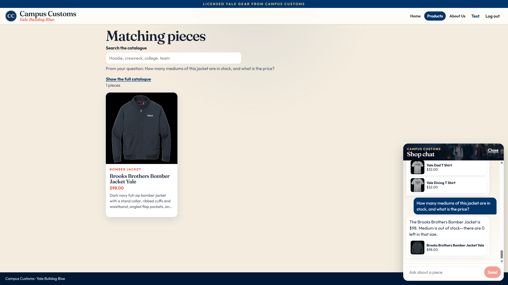
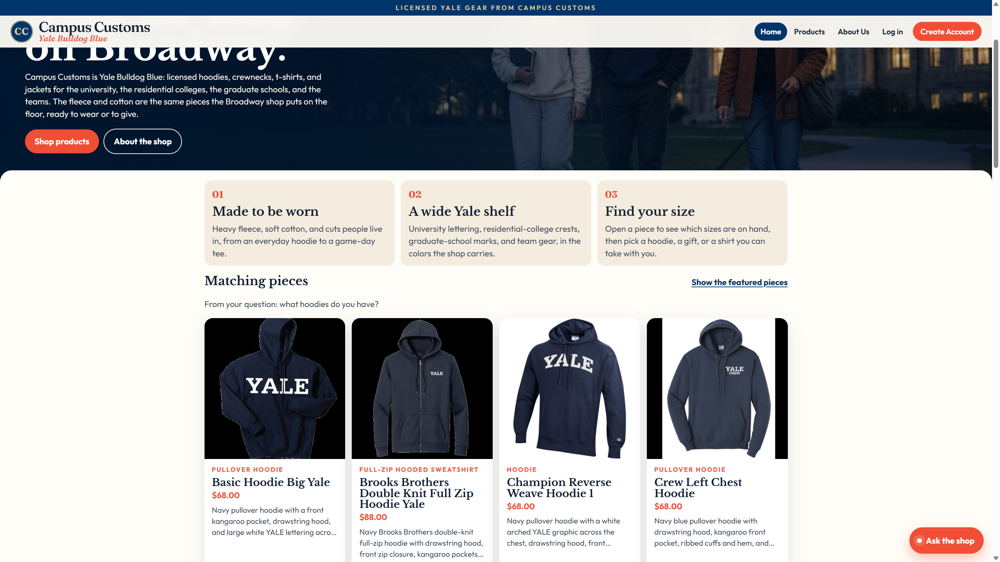
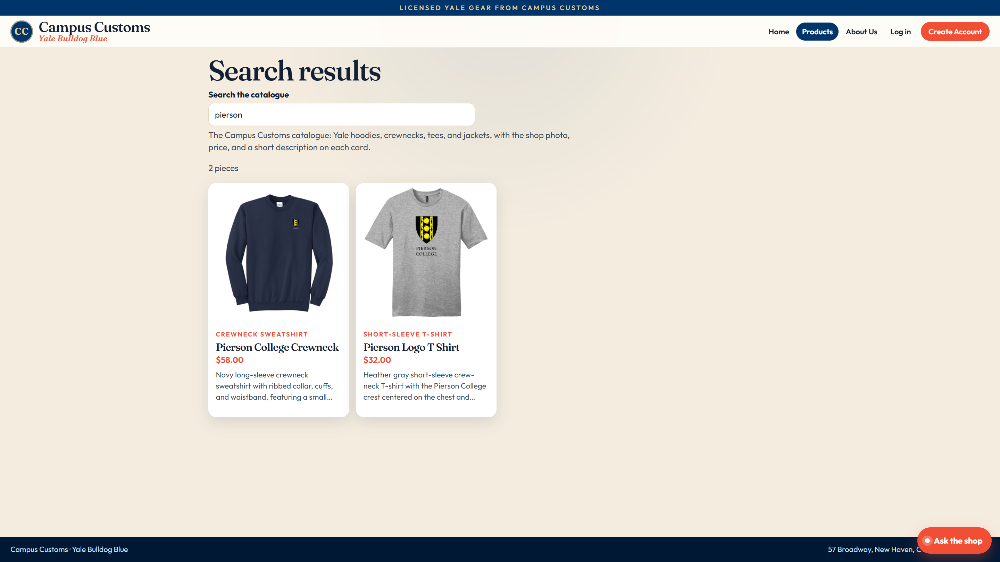

1. Chat checks inventory, and does not invent the numbers

Asked on the Brooks Brothers Bomber Jacket page, the chat answered that the jacket is $98 and that medium is out of stock, with 0 left. That matches the database: catalogue price 98, and inventory size M has quantity 0. The card on the page shows the same $98 price.
2. A category question puts matching cards on the page

After the question “what hoodies do you have?”, the shelf changed to Matching pieces and filled with hoodie cards: photo, name, and price. The line “From your question” shows those cards came from that question, not from the usual featured row.
3. Products page search bar

Typing “pierson” in the Products page search box narrowed the catalogue to 2 pieces: the Pierson College Crewneck at $58 and the Pierson Logo T Shirt at $32. The heading switched to Search results, so a shopper can find a college without scrolling the full shelf.